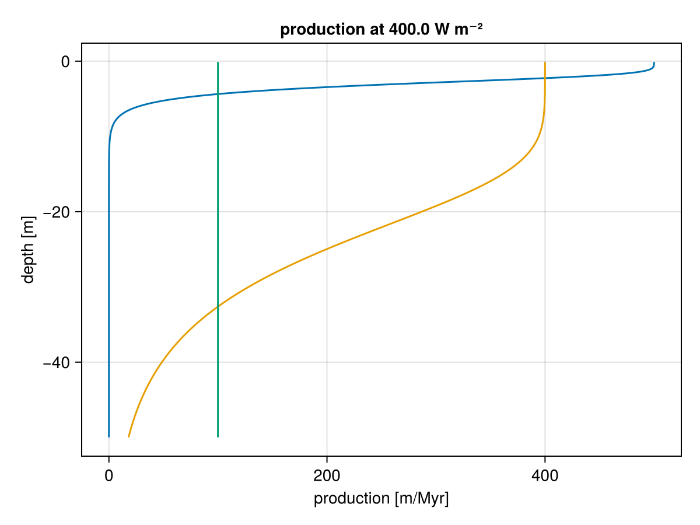
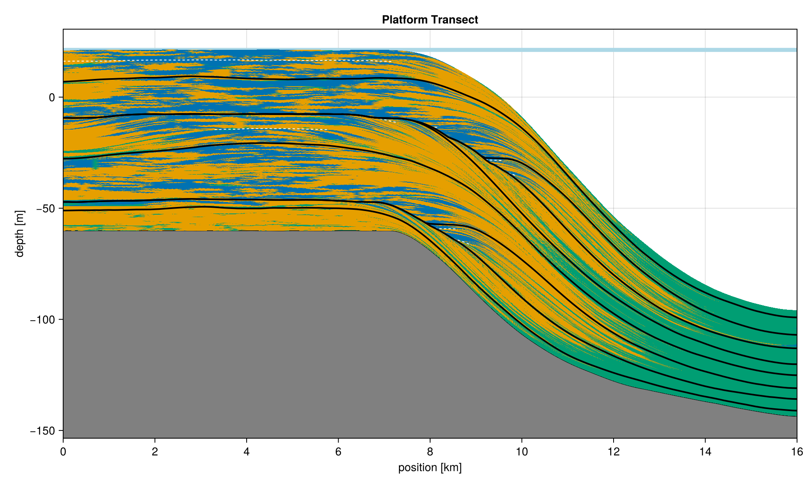
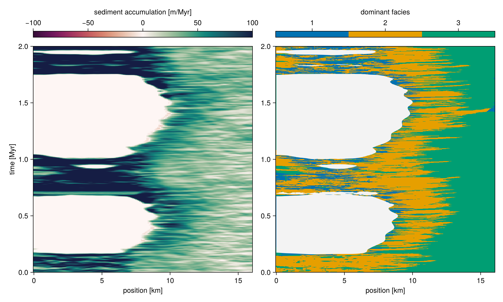
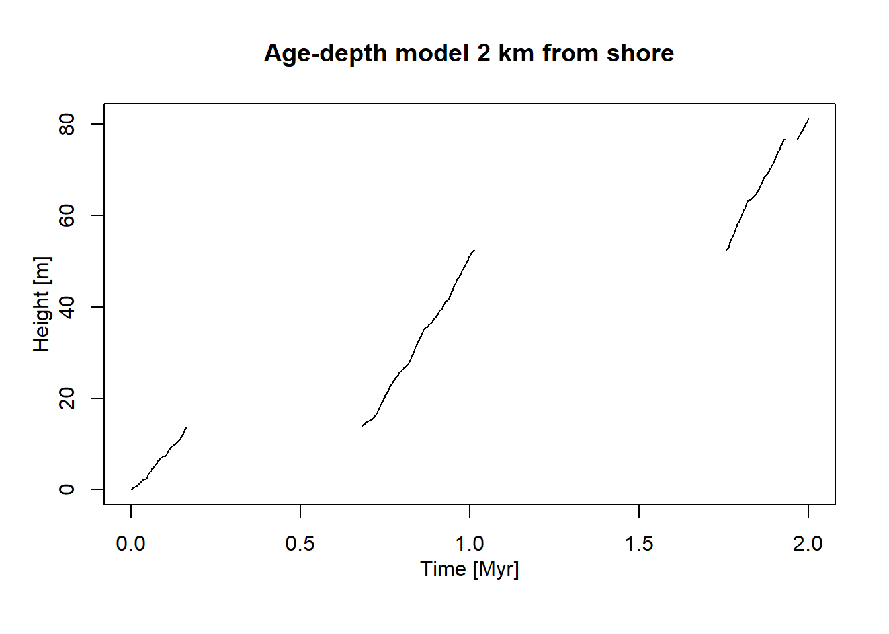
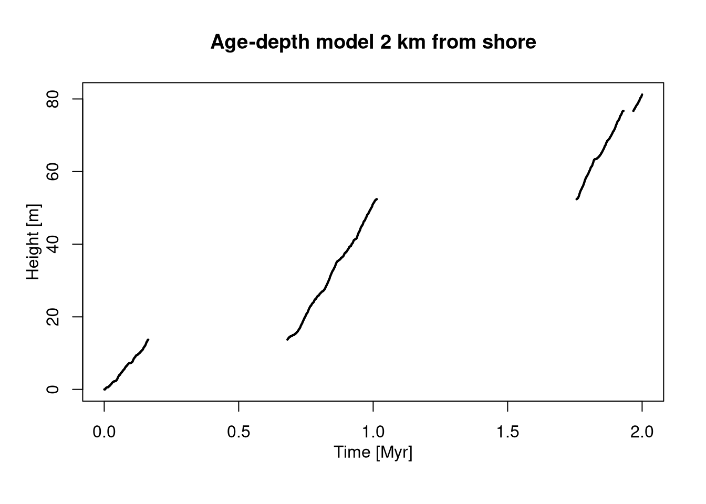
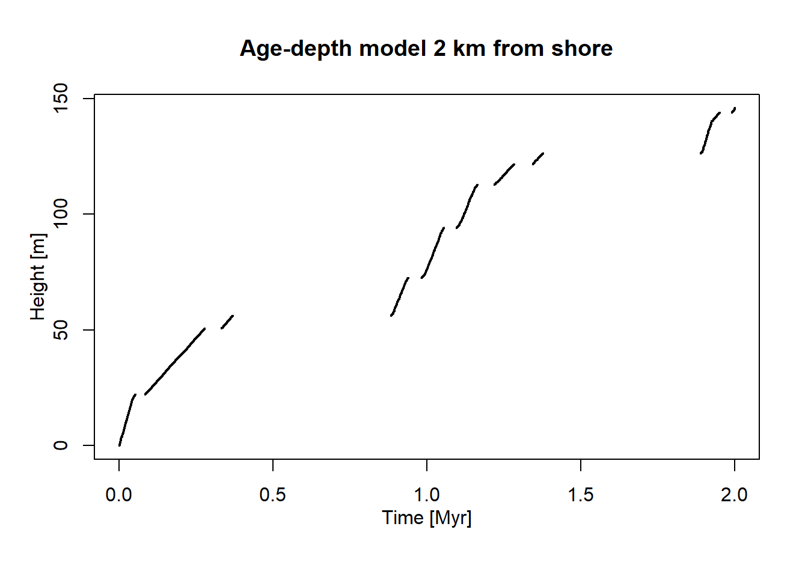
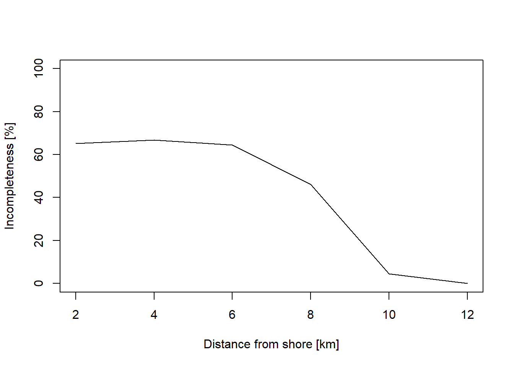
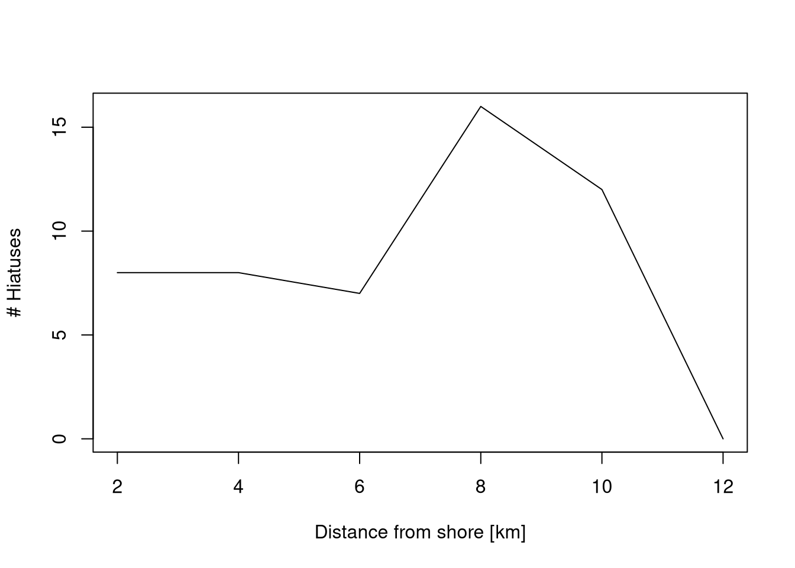
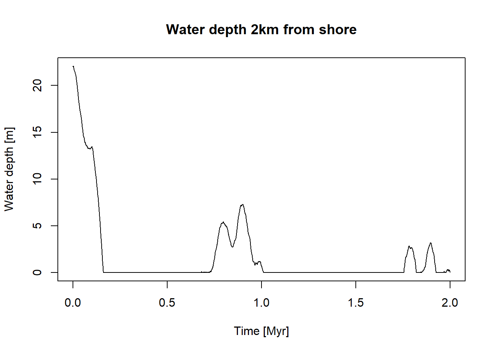
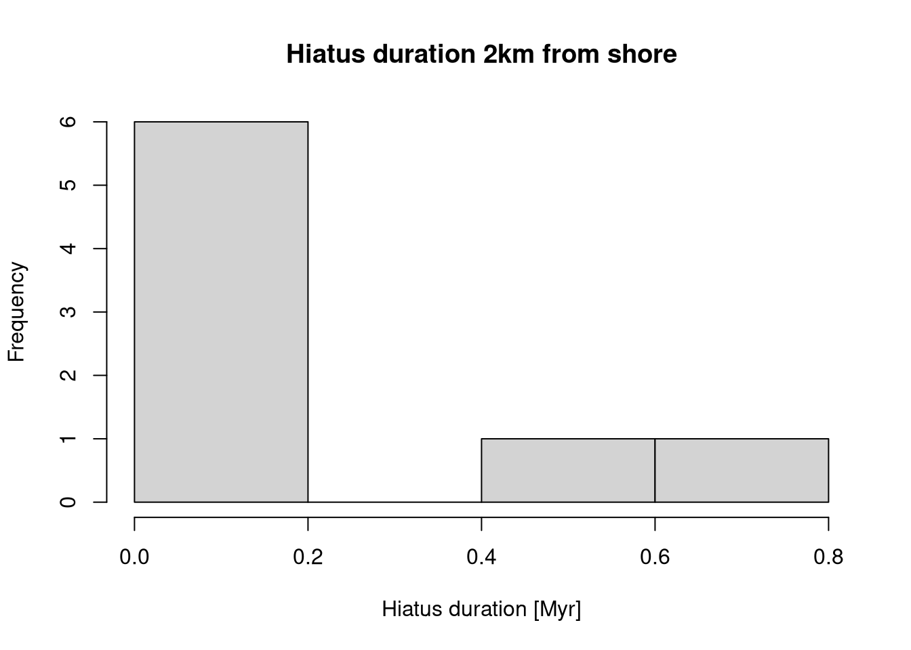

Stratigraphic Architectures and age-depth models
Stratigraphic Architectures and Age-Depth Models
This part of the workshop gives a first overview on the stratigraphic architecture used, and will familiarize you with the concepts of age-depth models and (stratigraphic) incompleteness. The duration is approx. 45 minutes.
Introduction
TipStratigraphic architecture
Stratigraphic architecture refers to the three-dimensional geometry of sedimentary strata within a basin, encompassing the distribution of unconformities, facies, systems tracts, and variations in sedimentation rates (Patzkowsky and Holland 2012; Holland and Patzkowsky 1999).
Stratigraphic architecture emerges from the interplay of accommodation (space for sediment accumulation controlled by subsidence and sea-level change), sediment production/supply, and depositional processes such as transport or compaction. Stratigraphic architecture determines where and when fossil-bearing sediments are deposited and preserved.
Example Stratigraphic Architecture
In this workshop, we use an example stratigraphic architecture simulated using CarboKitten.jl (Hidding et al. 2025) that emulates scenario A of Niklas Hohmann et al. (2024). Here, we provide a quick overview of the setup. If you are curious you can inspect the source code underlying the simulation here (and modify it if you like). The platform is an outcome of the interaction between a sea-level curve provided by us, sediment production profiles as a function of water depth, subsidence, and sediment transport. Below we take a closer look at the first two of the parameters.
Sediment production profiles
The simulated carbonate platform consists of three carbonate producing factories, one euphotic, one oligophotic, and one aphotic. The production profile of the factories are shown below.

The tree factories compete for space and propagate according to a cellular automaton as described in Burgess (2013). The simulation was run for 2 Myr in increments of 1 kyr.
Sea-level curve
Platform growth is driven by a sinusoidal sea level curve consisting of third and fifth order sea level changes with a period of 1 and 0.112 Myr and an amplitude of 20 and 2 m, respectively.
Stratigraphic architectures are three-dimensional and commonly visualized using 2D slices:
sediment sections with sequence-stratigraphic interpretation overlain
chronostratigraphic (Wheeler) diagrams
Below you see a sediment section (slice, transect) through the carbonate platform we use today:

Note how the platform top is dominated by the euphotic and oligophotic facies (yellow and blue), while the more distal parts are dominated by the aphotic (green) facies.
NoteChronostratigraphic diagram
also called a Wheeler diagram: a plot where the geological time is presented on the vertical axis and the geographic position on the horizontal axis, showing the relative ages and spatial extent of strata (Harry E. Wheeler (2) 1958). Wheeler diagrams transform thickness into time, revealing lacunae, i.e. gaps representing missing time due to non-deposition (hiatuses) or erosion, that are invisible in conventional sections.
For a comprehensive discussion of what Wheeler diagrams represent, see (Sylvester, Straub, and Covault 2024).

Age-depth models translate physical stratigraphy into time
NoteAge-depth model
An age-depth model (ADM) is a mapping that estimates the relationship between stratigraphic position (depth) and geological time for a stratigraphic sequence (Lacourse and Gajewski 2020; N. Hohmann et al. 2025), allowing paleontologists to assign ages to fossils and sedimentary events based on their position in the rock record (Sadler 1981).
ADMs translate information between the stratigraphic domain (SI units m) where we make our observations and the time domain (SI units s or derived units such as Myr) where the biotic change we are interested is happening.
Important properties of age-depth models are:
Because sediments do not accumulate at constant rates, age-depth relationships are typically nonlinear,
Each absolute (radiometric) or relative (biostratigraphic, chemostratigraphic etc) age tie-point is associated with uncertainty, so an age-depth model is associated with uncertainty and the error of age should ideally be propagated into downstream analyses - this is not a standard in paleobiology yet.

Age-depth models are crucial tools for stratigraphy, as they contain a lot of information:
The gaps in the age-depth model correspond to hiatuses, caused by nondeposition or erosion.
The slope of the age-depth model corresponds to the sedimentation rate - the higher the slope, the faster sediment accumulates.
Naturally, they can be used to determine the absolute age of events and samples from the stratigraphic domain. Conversely, they can be used to simulate data in the time domain and then predict their stratigraphic expression.
Coding cheat sheet
Here you find a list of useful functions and code snippets that you can use to solve the tasks.
Getting help
To find the documentation of a function, prepend its name with a question mark and execute it in the console (e.g., ?random_walk). The help pages are also available on the package webpage (mindthegap-erc.github.io/StratPal/) under “Reference”. Long form documentation (vignettes) can be found on the webpage under “Articles” or via browseVignettes("StratPal").
Loading the package and data
Load the StratPal and admtools packages via
library("StratPal")
library("admtools")to have all required functionality and example data available. We use the example data stored in the scenarioA variable that comes with the StratPal package. You can find more details on the data using ?scenarioA.
Creating age-depth models
Age-depth models are constructed using tp_to_adm (tie point to age-depth model) from the admtools package. Here we construct the age-depth model 2 km from shore by passing the function the vectors of times and heights at that stratigraphic position:
pos = "2km" # distance from shore
adm = tp_to_adm(t = scenarioA$t_myr, # construct age-depth model
h = scenarioA$h_m[,pos],
T_unit = "Myr",
L_unit = "m")Note that we immediately add time and length units to avoid downstream confusion. The example data contains model outputs at 2, 4, 6, 8, 10, and 12 km from shore.
Plotting Age-depth models
Age-depth models can be plotted using the standard plot command:
plot(adm, # Plot age-depth model
lwd_acc = 2, # plot thicker lines for intervals with sediment accumulation (lwd = line width)
lty_destr = 0) # don't plot destructive intervals/gaps (lty = line type)
T_axis_lab() # add time axis label
L_axis_lab() # add length axis label
title("Age-depth model 2 km from shore")
See ?plot.adm for more plotting options.
Extracting information from age-depth models
Age-depth models contain a lot of stratigraphic information, e.g. on stratigraphic completeness, hiatuses, or sedimentation rates. Some basic functionality to extract this information is:
get_total_duration(adm) # time interval covered by age-depth model[1] 2get_total_thickness(adm) # sediment accumulated [1] 81.23346get_completeness(adm) # stratigraphic completeness[1] 0.349get_hiat_duration(adm) # extract hiatus durations[1] 0.002 0.517 0.001 0.002 0.001 0.742 0.001 0.036summary(adm) # some summary statisticsage-depth model
Total duration: 2 Myr
Total thickness: 81.23346 m
Stratigraphic completeness: 34.9 %
8 hiatus(es)Stratigraphic completeness is the proportion of deposition time represented in the geological section. Here it is calculated per stratigraphic column (1 D section), but it can also be expressed per a horizontal section (slice, 2 D) or basin (3 D).
You can find a comprehensive list of functions that extract information from age-depth models here.
Extracting water depth
Water depth at the simulation runs is stored in the variable scenarioA$wd_m
pos = "2km"
wd = scenarioA$wd_m[,"2km"]
t = scenarioA$t_myr
plot(x = t,
y = wd,
type = "l",
xlab = "Time [Myr]",
ylab = "Water depth [m]",
main = "Water depth 2 km from shore")
Tasks
ImportantTask 1.1: Getting to know age-depth models
Define age-depth models for different locations (e.g., 4 km, 6 km etc) along the onshore-offshore gradient, and plot them.
How do they connect to the chronostratigraphic diagram and the sea level curve show above?
ImportantTask 1.2: Incompleteness across the onshore-offshore gradient
Examine how stratigraphic incompleteness and the number of hiatuses changes along the onshore-offshore gradient.
ImportantTask 1.3: Hiatus duration and water depth
Generate histograms of hiatus durations and plots of water depth at different distances from shore.
Do you see any systematic changes?
Solutions
NoteSolution Task 1.1: Getting to know age-depth models
Define age-depth models for different locations (e.g., 4 km, 6 km etc) along the onshore-offshore gradient, and plot them.
How do they connect to the chronostratigraphic diagram and the sea level curve show above?
# load packages
library("admtools")
library("StratPal")
adm_list = list() # storage for age-depth models
# distances from shore
dist = paste(seq(2, 12, by = 2), "km", sep = "")
# construct ADMs for all distances
for (pos in dist){
adm_list[[pos]] = tp_to_adm(t = scenarioA$t_myr,
h = scenarioA$h_m[,pos],
T_unit = "Myr",
L_unit = "m")
}Now you have a list with several age depth models. The code below plots one of them. You can modify it to plot each one separately or modify the code to plot all of them.
pos = "2km" # insert distance from shore here
stopifnot(pos %in% dist ) # validity check
plot(adm_list[[pos]],
# plot thicker lines for intervals with sediment accumulation (lwd = line width)
lwd_acc = 2,
# don't plot destructive intervals/hiatuses (lty = line type)
lty_destr = 0)
T_axis_lab() # add time axis label
L_axis_lab() # add length axis label
title(paste0("Age-depth model ", pos, " from shore"))
Age-depth models on the platform have a few long hiatuses that are represented as white space in the chronostratigraphic diagram. These hiatuses correspond to times of falling sea level, during which the platform top is exposed subaerially. On the slope, there are fewer hiatuses as sediment accumulation is more continuous due to continuous depostion from the aphotic carbonate factory.
NoteSolution Task 1.2: Incompleteness across the onshore-offshore gradient
Examine how stratigraphic incompleteness and the number of hiatuses changes along the onshore-offshore gradient.
inc = rep(NA, length(dist)) # storage for incompleteness
nhiat = rep(NA, length(dist)) # storage for number of hiatuses
for (i in seq_along(dist)){
pos = dist[i] # position in platform
# determine incompleteness
inc[i] = adm_list[[pos]] |>
get_incompleteness()
# determine no. of hiatuses
nhiat[i] = adm_list[[pos]] |>
get_hiat_no()
}
## Plotting
p = seq(from = 2, to = 12, by = 2) # dist from shore for plotting
plot(p, 100 * inc, # transform into %
xlab = "Distance from shore [km]",
ylab = "Incompleteness [%]",
type = "l",
ylim = c(0, 100))
plot(p, nhiat,
xlab = "Distance from shore [km]",
ylab = "# Hiatuses",
type = "l",
ylim = c(0, max(nhiat)))
Incompleteness is highest in the onshore sections (more than 60 %), and drops with distance from shore to values of around 10 % in the proximal slope. Note that this differs from Figure 4 in Niklas Hohmann et al. (2024), as we are examining incompleteness on a coarser spatial scale.
The number of hiatuses is low on the platform top (8 hiatuses at 2 - 6 km), with the highest values (16) on the platform edge (8 km). On the proximal slope, there are 12 hiatuses and the number drops to 0 in the distal slope, reflecting that this environment is less affected by sea-level fluctuations.
The hiatuses in the platform interior are generated by long intervals of low sea level, which exposes the platform top. The high number of hiatuses in the slope results from the fact that steep topography records sea-level fluctuations much more than flat topography. The distal slope is below the range of the sea-level fluctuations, so it does not undergo non-deposition or breaks in carbonate production, it is only affected by changes in low carbonate production of the aphotic factory and varying input from the platform top.
NoteSolution Task 1.3: Hiatus duration and water depth
Generate histograms of hiatus durations and plots of water depth at different distances from shore. Do you see any systematic changes?
pos = "2km" # position of adm
stopifnot(pos %in% dist) # validity check
plot(scenarioA$t_myr, scenarioA$wd_m[,pos],
xlab = "Time [Myr]",
ylab = "Water depth [m]",
type = "l",
main = paste0("Water depth ", pos, " from shore"))
hiatus_durations <- adm_list[[pos]] |>
get_hiat_duration()
if (length(hiatus_durations) == 0) {
stop("No hiatuses at position ", pos)
}
hiatus_durations |>
hist(xlab = "Hiatus duration [Myr]",
main = paste0("Hiatus duration ", pos, " from shore"))
Hiatus duration
The distribution of hiatus durations in the platform interior is bimodal: it consists of two long hiatuses (caused by the prolonged drops in the sea level) and six shorter hiatuses generated by the lower-order sea level changes.
At 8 km from shore, the number of short hiatuses increases to 14, reflecting the steep topography of the platform edge.
On the slope, hiatuses are more abundant, but their duration is much shorter. This is most pronounced for the proximal slope. In the distal slope (12 km) you might get an error: this is because there are no hiatuses.
Note the disconnect between the number of hiatuses and incompleteness: Onshore sections are the most incomplete, but have only a few hiatuses. In contrast, the proximal slope has the most hiatuses, but a low incompleteness. This is because hiatus duration in the onshore sections is much longer.
Water depth
In the platform top (2 km), water depth is 0 for the largest part of the studied 2 Myr, with an initial flooding and two subsequent rises corresponding to the highest points of the first-order sea-level cycles.
On the platform edge (8 km), the water depth reaches a maximum of 30 m in the initial flooding phase, but it is still emerged for a large part of the interval. The upper slope remains under water for all the time of the simulation, reflecting how different platform top and platform slopes are in terms of deposition.
The strong cyclicity of the sea-level curve is still visible at 12 km offshore, where the water depth oscillates between 45 and 90 m.
References
Burgess, Peter. 2013. “CarboCAT: A Cellular Automata Model of Heterogeneous Carbonate Strata.” Computers & Geosciences 53: 129–40. https://doi.org/https://doi.org/10.1016/j.cageo.2011.08.026.
Harry E. Wheeler (2). 1958. “Time-Stratigraphy.” AAPG Bulletin 42. https://doi.org/10.1306/0bda5af2-16bd-11d7-8645000102c1865d.
Hidding, J., E. Jarochowska, N. Hohmann, X. Liu, P. Burgess, and H. Spreeuw. 2025. “CarboKitten.jl – an Open Source Toolkit for Carbonate Stratigraphic Modeling.” EGUsphere 2025: 1–28. https://doi.org/10.5194/egusphere-2025-4561.
Hohmann, N., D. De Vleeschouwer, S. Batenburg, and E. Jarochowska. 2025. “Nonparametric Estimation of Age–Depth Models from Sedimentological and Stratigraphic Information.” Geochronology 7 (3): 427–48. https://doi.org/10.5194/gchron-7-427-2025.
Hohmann, Niklas, Joël R. Koelewijn, Peter Burgess, and Emilia Jarochowska. 2024. “Identification of the Mode of Evolution in Incomplete Carbonate Successions.” BMC Ecology and Evolution 24 (1): 113. https://doi.org/10.1186/s12862-024-02287-2.
Holland, Steven M., and Mark E. Patzkowsky. 1999. “Models for Simulating the Fossil Record.” Geology 27 (6): 491. https://doi.org/10.1130/0091-7613(1999)027<0491:mfstfr>2.3.co;2.
Lacourse, Terri, and Konrad Gajewski. 2020. “Current Practices in Building and Reporting Age-Depth Models.” Quaternary Research 96 (May): 28–38. https://doi.org/10.1017/qua.2020.47.
Patzkowsky, Mark E, and Steven M. Holland. 2012. Stratigraphic Paleobiology: Understanding the Distribution of Fossil Taxa in Time and Space. University of Chicago Press.
Sadler, Peter M. 1981. “Sediment Accumulation Rates and the Completeness of Stratigraphic Sections.” The Journal of Geology 89 (5): 569–84. https://doi.org/10.1086/628623.
Sylvester, Zoltán, Kyle M. Straub, and Jacob A. Covault. 2024. “Stratigraphy in Space and Time: A Reproducible Approach to Analysis and Visualization.” Earth-Science Reviews 250 (March): 104706. https://doi.org/10.1016/j.earscirev.2024.104706.